बचत और निवेश Flows (Savings and Investments Flows)¶
चार Flows आपको पैसा अलग रखने और बढ़ाने में मदद करते हैं: I started a SIP, I booked an FD, I contribute to PPF / EPF / NPS और I'm saving for something।
मैंने SIP शुरू की (I Started a SIP)¶
इसे किसी फंड और मासिक डेबिट तारीख से जोड़ें।
इसे गुल्लक की तरह समझें जो खुद भरती है¶
घर की मिट्टी की गुल्लक याद है? जब याद आता, तब आप उसमें सिक्का डाल देते थे, और कई महीनों में भूल भी जाते थे। SIP उसी का बड़ा रूप है: हर महीने एक तय तारीख को एक तय रकम अपने आप जमा हो जाती है। यह Flow TrackMyRupee को यही आदत सिखाता है। यह आपके निवेश के लिए एक जगह बनाता है और तय समय पर पैसा उसमें पहुंचाता है।
यह Flow दो तरह के निवेश संभालता है, और आप पहली स्क्रीन पर इनमें से चुनते हैं:
- SIP: किसी बाज़ार से जुड़े फंड में मासिक निवेश, जैसे इंडेक्स फंड।
- RD: बैंक या डाकघर में आवर्ती जमा (recurring deposit), जिसमें ब्याज दर तय होती है।
इसका उपयोग कब करें¶
जब भी आप नियमित मासिक निवेश शुरू करें। इसमें लगभग एक मिनट लगता है।
आपको क्या भरना है¶
चरण 1: Investment Basics
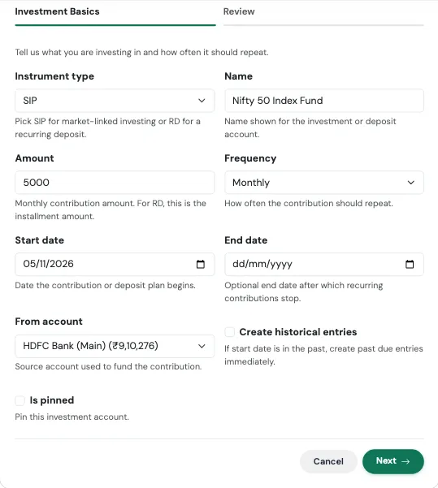
| फ़ील्ड | क्या दर्ज करें |
|---|---|
| Instrument type | बाज़ार से जुड़े निवेश के लिए SIP, या आवर्ती जमा के लिए RD। |
| Name | निवेश के लिए दिखने वाला नाम, जैसे "Nifty 50 Index Fund"। |
| Amount | मासिक योगदान। RD के लिए यह किस्त की रकम है। |
| Frequency | डिफ़ॉल्ट रूप से Monthly। |
| Start date | योजना शुरू होने की तारीख। |
| End date | वैकल्पिक। वह तारीख जिसके बाद योगदान बंद हो जाता है, जैसे RD खत्म होने पर। |
| From account | वह बैंक खाता जिससे पैसा कटता है। |
| Create historical entries | अगर शुरू होने की तारीख बीत चुकी है और आप पिछले योगदान अभी जुड़वाना चाहते हैं, तो इसे चालू करें। |
| Is pinned | वैकल्पिक। खाते को आपकी सूची में सबसे ऊपर रखता है। |
चरण 2: Recurring Deposit Details (केवल तब दिखता है जब आप RD चुनते हैं)
| फ़ील्ड | क्या दर्ज करें |
|---|---|
| Deposit principal | शुरुआती रकम, अगर कोई हो। |
| Deposit rate | सालाना ब्याज दर। |
| Deposit compounding | ब्याज कितनी बार जुड़ता है: सरल, तिमाही, मासिक या वार्षिक। |
| Deposit maturity date | RD कब पूरी होती है। |
| RD installment day | महीने का वह दिन जब किस्त दर्ज होती है। |
| Show accrued balance | केवल आपके डाले हुए पैसे के बजाय अब तक कमाए ब्याज सहित शेष राशि दिखाएं। |
| Record maturity income | RD पूरी होने पर ब्याज को आय के रूप में दर्ज करें। |
समीक्षा और पुष्टि (Review and confirm)
आखिरी टैब सेव होने से पहले बताता है कि क्या बनने वाला है, और सबसे ऊपर मुख्य आंकड़ा दिखता है। उसे जांचें, फिर Confirm and create दबाएं। किसी भी कार्ड पर Edit से उस चरण पर वापस जा सकते हैं।
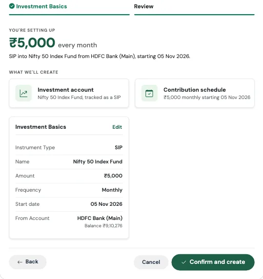
क्या बनता है¶
- एक निवेश खाता: SIP के लिए Mutual Funds खाता, या आवर्ती जमा के लिए RD खाता
- आपके बैंक खाते से उसमें एक आवर्ती मासिक हस्तांतरण
Review स्क्रीन पर सबसे ऊपर मासिक रकम दिखती है, और उसके बाद सरल भाषा की एक पंक्ति, जैसे "SIP into Nifty 50 Index Fund from HDFC Salary, starting 15 Oct 2026."
असल ज़िंदगी का उदाहरण
आदित्य तय करता है कि वह हर महीने ₹5,000 Nifty 50 इंडेक्स फंड में लगाएगा, और पैसा हर 5 तारीख को उसके सैलरी खाते से कटेगा।
वह I started a SIP चलाता है, प्रकार SIP ही रखता है, नाम "Nifty 50 Index Fund" देता है, 5000 भरता है, Monthly चुनता है, शुरू होने की तारीख 5 नवंबर रखता है और अपना HDFC Salary खाता चुनता है। Review पर उसे "₹5,000 every month" और दो कार्ड दिखते हैं: निवेश खाता और योगदान का शेड्यूल। पुष्टि के बाद हर 5 तारीख को उसके सैलरी खाते से ₹5,000 घटते हैं और Mutual Funds खाते में उतने ही बढ़ जाते हैं। उस दिन उसकी निवल संपत्ति नहीं बदलती, क्योंकि पैसा बस एक जेब से दूसरी जेब में गया है, लेकिन उसकी संपत्ति के बंटवारे में अब इक्विटी भी शामिल है।
ध्यान रखें¶
फंड का असली मूल्य
यह Flow केवल वह पैसा दर्ज करता है जो आपने डाला। फंड की असली यूनिट और उनका मौजूदा मूल्य ट्रैक करने के लिए बाद में अपनी होल्डिंग्स जोड़ें, और हर किस्त को उस फंड से जोड़ें जिसमें वह लगी, Buy more → Paid by transfer से। देखें होल्डिंग्स और म्यूचुअल फंड और Accrued बनाम Invested व्यू।
SIP और RD एक जैसी चीज़ें नहीं हैं
SIP का मूल्य बाज़ार के साथ ऊपर-नीचे होता है। RD का मूल्य एक तय दर से बढ़ता है। अगर आप RD चुनते हैं, तो दूसरा चरण ज़रूर भरें, वरना ब्याज ट्रैक नहीं होगा।
मैंने FD बुक की (I Booked an FD)¶
मूलधन, दर और परिपक्वता, पूरी होने तक ट्रैक।
इसे पेड़ लगाने की तरह समझें¶
आप बीज ज़मीन में डालते हैं (मूलधन), और आपको मोटा-मोटा पता होता है कि फल कब आएगा (परिपक्वता की तारीख)। बीच में वह चुपचाप बढ़ता रहता है। FD Flow TrackMyRupee को बताता है कि बीज कहां से आया, वह कितनी तेज़ी से बढ़ता है, और फल की उम्मीद कब करनी है।
इसका उपयोग कब करें¶
जब आप नई फिक्स्ड डिपॉज़िट बुक करें। इसमें लगभग एक मिनट लगता है।
आपको क्या भरना है¶
चरण 1: Deposit Basics
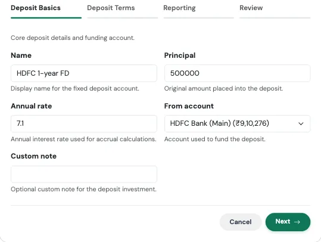
| फ़ील्ड | क्या दर्ज करें |
|---|---|
| Name | एक लेबल, जैसे "SBI 1-year FD"। |
| Principal | वह रकम जो आपने जमा में डाली। |
| Annual rate | सालाना ब्याज दर। |
| From account | वह खाता जिससे जमा के लिए पैसा आया। |
| Custom note | वैकल्पिक। फंडिंग प्रविष्टि के डिफ़ॉल्ट नोट की जगह लेता है। |
चरण 2: Deposit Terms
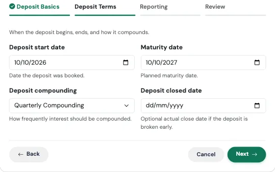
| फ़ील्ड | क्या दर्ज करें |
|---|---|
| Deposit start date | जिस दिन आपने इसे बुक किया। |
| Maturity date | यह कब परिपक्व होती है। |
| Deposit compounding | Simple, Quarterly, Monthly या Annual। बैंक FD के लिए Quarterly सबसे आम है। |
| Deposit closed date | वैकल्पिक। केवल तब चाहिए जब आपने FD समय से पहले तोड़ी हो। |
चरण 3: Reporting
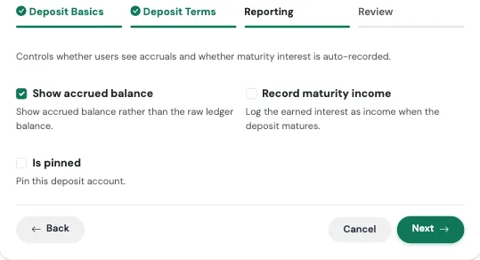
| फ़ील्ड | क्या दर्ज करें |
|---|---|
| Show accrued balance | डिफ़ॉल्ट रूप से चालू। केवल निवेश की रकम के बजाय अब तक कमाए ब्याज सहित मूल्य दिखाता है। |
| Record maturity income | डिफ़ॉल्ट रूप से बंद। चालू करने पर परिपक्वता की तारीख को ब्याज आय के रूप में दर्ज होता है। |
| Is pinned | वैकल्पिक। खाते को आपकी सूची में सबसे ऊपर रखता है। |
समीक्षा और पुष्टि (Review and confirm)
आखिरी टैब सेव होने से पहले बताता है कि क्या बनने वाला है, और सबसे ऊपर मुख्य आंकड़ा दिखता है। उसे जांचें, फिर Confirm and create दबाएं। किसी भी कार्ड पर Edit से उस चरण पर वापस जा सकते हैं।
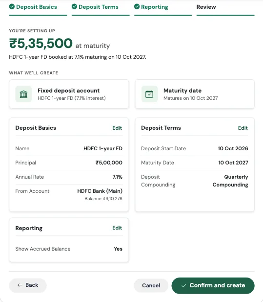
क्या बनता है¶
- आपके दर्ज किए दर, तारीखों और compounding के साथ एक फिक्स्ड डिपॉज़िट खाता
- एक एकमुश्त फंडिंग प्रविष्टि, जो Investment Lump Sum प्रकार के Capital Event के रूप में दर्ज होती है और शुरू होने की तारीख को फंडिंग खाते से मूलधन घटाती है
- परिपक्वता ट्रैकिंग, ताकि आप देख सकें कि इसकी कीमत कितनी होगी, और कब
Review स्क्रीन पर परिपक्वता पर मिलने वाली रकम का एक त्वरित अनुमान दिखता है, जैसे ₹5,35,000 at maturity।
असल ज़िंदगी का उदाहरण
सुनीता 10 अक्टूबर को अपने बचत खाते से ₹5,00,000 की एक साल की FD 7% पर बुक करती है, तिमाही compounding के साथ।
वह I booked an FD चलाती है, ब्योरा भरती है, Show accrued balance चालू रखती है और Record maturity income चालू कर देती है। Review पर उसे "₹5,35,000 at maturity" दिखता है। यह आंकड़ा एक त्वरित अनुमान है। उसका बैंक, जो तिमाही compounding करता है, असल में थोड़ा ज़्यादा देगा, लगभग ₹5,35,930, और ऐप का accrued balance आपके चुने compounding के हिसाब से चलता है। अगले साल 10 अक्टूबर बीतने के बाद, ऐप खोलते ही ब्याज आय के रूप में दर्ज हो जाता है, इसलिए उस महीने की उसकी बचत दर में वह दिखता है, और उसे खुद याद रखकर दर्ज नहीं करना पड़ता।
ध्यान रखें¶
तारीखें आपके लिए जांची जाती हैं
फॉर्म ऐसी परिपक्वता तारीख स्वीकार नहीं करेगा जो शुरू होने की तारीख के बराबर या उससे पहले हो, और न ऐसी बंद होने की तारीख जो शुरू होने की तारीख से पहले हो। यही जांच RD और PPF / EPF / NPS पर भी लागू होती है, उनकी समाप्ति तारीखों समेत।
मेरा बैंक बैलेंस क्यों घट गया?
यह फंडिंग प्रविष्टि अपना काम कर रही है। जिस दिन आपने FD बुक की, मूलधन सच में आपके बचत खाते से निकला। वह FD की शेष राशि के रूप में दोबारा दिखता है, इसलिए आपकी निवल संपत्ति वही रहती है।
मूलधन Capital Event क्यों है
FD में ₹5,00,000 डालना कोई खर्च नहीं है। इसे Capital Event के रूप में दर्ज करने से यह आपके मासिक खर्च और बजट से बाहर रहता है, इसलिए आपके Dashboard पर अचानक ऐसा नहीं लगता कि आपने ज़्यादा खर्च कर दिया। देखें Capital Events।
मैं PPF / EPF / NPS में योगदान देता हूं (I Contribute to PPF / EPF / NPS)¶
आपकी रिटायरमेंट योजना में सालाना या मासिक योगदान।
इसे लंबी दूरी की ट्रेन में चढ़ने की तरह समझें¶
आप एक दिन में मंज़िल तक नहीं पहुंचते। आप साल में एक बार चढ़ते हैं, बैठ जाते हैं, और सफ़र में सालों लगते हैं। ज़रूरी यह है कि आप चढ़ते रहें। यह Flow आपके चढ़ने यानी सालाना योगदान को ट्रैक करता है, और सफ़र की प्रगति यानी बढ़ती शेष राशि को भी।
इसका उपयोग कब करें¶
Public Provident Fund, Employees' Provident Fund या National Pension System खाते के लिए, जिसमें आप नियमित योगदान देते हैं। इसमें लगभग एक मिनट लगता है।
आपको क्या भरना है¶
चरण 1: Scheme Basics
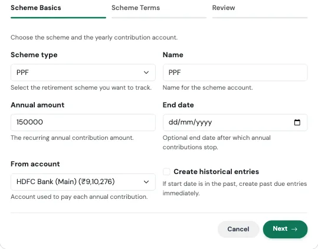
| फ़ील्ड | क्या दर्ज करें |
|---|---|
| Scheme type | PPF, EPF या NPS। |
| Name | खाते का लेबल, जैसे "SBI PPF"। |
| Annual amount | सालाना योगदान। |
| End date | वैकल्पिक। इस तारीख के बाद योगदान बंद हो जाते हैं। |
| From account | वह खाता जिससे हर योगदान का भुगतान होता है। |
| Create historical entries | पिछले सालों के योगदान जोड़ने के लिए चालू करें। |
चरण 2: Scheme Terms
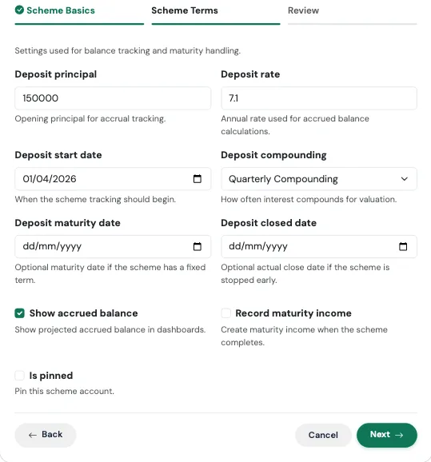
| फ़ील्ड | क्या दर्ज करें |
|---|---|
| Deposit principal | योजना में आपके पास पहले से जमा शेष राशि। |
| Deposit rate | वृद्धि का अनुमान लगाने के लिए सालाना दर। |
| Deposit start date | ट्रैकिंग कब शुरू होती है। |
| Deposit compounding | ब्याज कितनी बार compound होता है। |
| Deposit maturity date | वैकल्पिक, तय अवधि वाली योजनाओं के लिए। |
| Deposit closed date | वैकल्पिक, अगर आपने समय से पहले बंद की। |
| Show accrued balance | ब्याज सहित अनुमानित शेष राशि दिखाएं। |
| Record maturity income | योजना पूरी होने पर आय बनाएं। |
| Is pinned | वैकल्पिक। खाते को सबसे ऊपर रखता है। |
समीक्षा और पुष्टि (Review and confirm)
आखिरी टैब सेव होने से पहले बताता है कि क्या बनने वाला है, और सबसे ऊपर मुख्य आंकड़ा दिखता है। उसे जांचें, फिर Confirm and create दबाएं। किसी भी कार्ड पर Edit से उस चरण पर वापस जा सकते हैं।
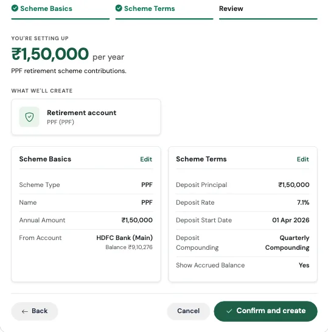
क्या बनता है¶
- आपकी शेष राशि रखने वाला एक योजना खाता (PPF, EPF या NPS)
- आपके बैंक खाते से उसमें एक आवर्ती सालाना हस्तांतरण, जिस पर वार्षिक निवेश योगदान का लेबल लगा होता है
असल ज़िंदगी का उदाहरण
विक्रम छह साल से अपने PPF में पैसा डाल रहा है और उसमें ₹4,20,000 जमा हैं। वह चाहता है कि हर अप्रैल में उसके SBI खाते से ₹1,50,000 उसमें जाएं।
वह I contribute to PPF / EPF / NPS चलाता है, PPF चुनता है, सालाना रकम 150000 भरता है, और deposit principal 420000 डालता है, दर 7.1%, वार्षिक compounding और शुरू होने की तारीख 1 अप्रैल। अगले अप्रैल में ₹1,50,000 अपने आप SBI से उसके PPF खाते में चले जाते हैं। उसकी निवल संपत्ति नहीं घटती, क्योंकि यह एक हस्तांतरण है, और उसके Accounts पेज पर PPF की शेष राशि उसकी तय की हुई दर से बढ़ती रहती है।
ध्यान रखें¶
जो शेष राशि आपके पास पहले से है, वही दर्ज करें
अगर योजना में आपकी छह साल की बचत है और आप Deposit principal शून्य छोड़ देते हैं, तो आपकी निवल संपत्ति असल से कम दिखेगी। शून्य नहीं, अपनी मौजूदा शेष राशि दर्ज करें।
EPF आमतौर पर वेतन से कटता है
अगर आपका नियोक्ता आपका EPF सीधे आपकी पेस्लिप से जमा करता है, तो वह पैसा कभी आपके बैंक खाते से नहीं गुज़रता, इसलिए बैंक खाते से सालाना हस्तांतरण हकीकत से मेल नहीं खाएगा। EPF के लिए बेहतर हो सकता है कि आप खाता खाते पेज से जोड़ें और समय-समय पर अपनी पासबुक से उसकी शेष राशि अपडेट करें। यह Flow PPF और NPS के लिए सबसे उपयुक्त है, जहां आप खुद पैसा जमा करते हैं।
मैं किसी चीज़ के लिए बचत कर रहा हूं (I'm Saving for Something)¶
इमरजेंसी फंड, यात्रा, कोई बड़ी खरीदारी, लक्ष्य तय करें।
इसे शेल्फ पर रखे लेबल लगे डिब्बे की तरह समझें¶
"गोवा ट्रिप, दिसंबर" लिखे डिब्बे से पैसे निकालना, पैसों के आम ढेर से निकालने की तुलना में कहीं मुश्किल होता है। लेबल हर रुपये को एक मकसद देता है, और समय-सीमा आपको रफ़्तार देती है। यह Flow ऐप में वही डिब्बा बनाता है, लक्ष्य और तारीख के साथ।
इसका उपयोग कब करें¶
किसी भी चीज़ के लिए जिसके लिए आप बचत कर रहे हैं: इमरजेंसी फंड, छुट्टी, शादी, डाउन पेमेंट, नया लैपटॉप। इसमें एक मिनट से भी कम लगता है।
आपको क्या भरना है¶
चरण 1: Goal Details
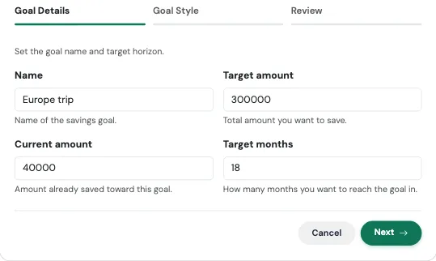
| फ़ील्ड | क्या दर्ज करें |
|---|---|
| Name | आप किस चीज़ के लिए बचत कर रहे हैं। |
| Target amount | कुल रकम जो आप जुटाना चाहते हैं। |
| Current amount | वैकल्पिक। जो आप पहले ही अलग रख चुके हैं। |
| Target months | आप खुद को कितने महीने देते हैं। |
चरण 2: Goal Style (वैकल्पिक)
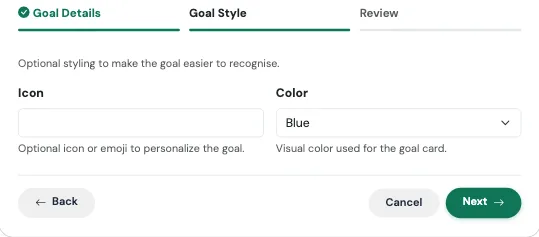
| फ़ील्ड | क्या दर्ज करें |
|---|---|
| Icon | लक्ष्य को एक नज़र में पहचानने के लिए आइकन या इमोजी। |
| Color | लक्ष्य कार्ड का रंग: Blue, Green, Red, Yellow या Light Blue। |
समीक्षा और पुष्टि (Review and confirm)
आखिरी टैब सेव होने से पहले बताता है कि क्या बनने वाला है, और सबसे ऊपर मुख्य आंकड़ा दिखता है। उसे जांचें, फिर Confirm and create दबाएं। किसी भी कार्ड पर Edit से उस चरण पर वापस जा सकते हैं।
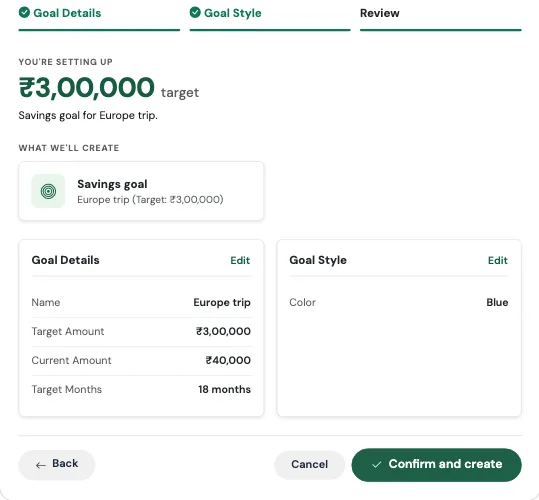
क्या बनता है¶
- आपके लक्ष्य के साथ एक बचत लक्ष्य, और आज से उतने महीने बाद की लक्ष्य तारीख
- आपके बचत लक्ष्य पेज पर एक लक्ष्य कार्ड, जहां आप प्रगति देखते हैं और योगदान जोड़ते हैं
अपनी योजना को जांचने का एक आसान तरीका: लक्ष्य में से जो बचा चुके हैं वह घटाएं, और महीनों की संख्या से भाग दें। इतना आपको हर महीने अलग रखना होगा।
असल ज़िंदगी का उदाहरण
अनन्या और उसके दोस्त 18 महीने बाद गोवा ट्रिप की योजना बना रहे हैं। फ्लाइट समेत उसके हिस्से का अनुमान ₹3,00,000 है, और उसके पास ₹30,000 पहले से बचे हैं।
वह I'm saving for something चलाती है और "Goa trip", 300000, 30000 और 18 भरती है। हिसाब सीधा है: 18 महीनों में बाकी ₹2,70,000 यानी हर महीने ₹15,000। वह ताड़ के पेड़ वाले आइकन के साथ Blue कार्ड चुनती है और पुष्टि करती है। हर महीने जैसे-जैसे वह लक्ष्य में पैसा जोड़ती है, प्रगति पट्टी भरती जाती है, और ट्रिप एक धुंधला विचार नहीं रहता, तारीख वाला एक आंकड़ा बन जाता है।
ध्यान रखें¶
लक्ष्य कोई अलग बैंक खाता नहीं है
लक्ष्य केवल एक टारगेट की ओर प्रगति ट्रैक करता है। इसे बनाने से कोई पैसा नहीं हिलता। बाद में आप जो भी योगदान दर्ज करते हैं, वह रकम आपके चुने खाते से निकलकर लक्ष्य में जुड़ती है। अगर आप चाहते हैं कि पैसा अलग रखा रहे, तो उसे अलग खाते में रखें और योगदान उसी से दर्ज करें।